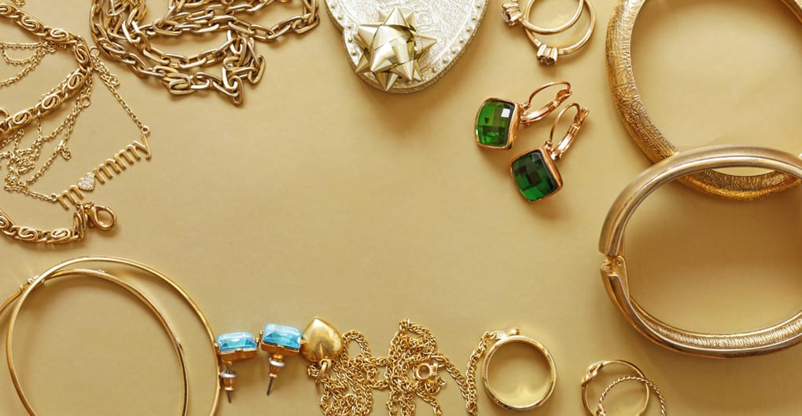

ORO BRILLANTE
Usamos oro de 24 quilates, en tonos amarillo,
Rosado y bronce. Es uno de los más valorados del
mundo y principal material utilizado en la joyería.

PLATA BRILLANTE
Utilizamos el baño de plata al 99.9% para asegurar
la durabilidad de nuestras joyas. Además, es un
metal representativo de Latinoamérica.

ORO BRILLANTE
Utilizamos el baño de plata al 99.9% para asegurar
la durabilidad de nuestras joyas. Además, es un
metal representativo de Latinoamérica.